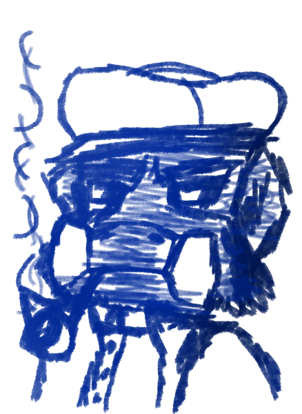

Welcome to Bo's Diary

Dear Diary,
This shall be the first entry of my third journal, which I bought from Otis Dammer just this morning, and it is the most official looking one I have owned so far. I like the preprinted entry spaces and drawing margins. It will make things a lot more organized in the future, especially compared to my past journals.
Asides from the purchase of this journal, today was rather mundane. I helped Auntie Woolie replant some of the wheat that got ruined from the rainstorm over the week's end. I hate the mudslides and the flooding, but I can't complain when the air smells so fresh the days after.
May my home be forever be blessed with petrichor.
Afterward I finished up cleaning the porch on the homestead for Uncle Sonny and we had mushroom stew with mashed potatoes for supper. No dessert today, but Auntie Woolie has something special planned for tomorrow. I can't wait!
That's all. Here's to tomorrow!

Strawberry carrot oatmeal cake.
How much do I LOVE strawberry carrot oatmeal cake? It is sweet, and
Auntie Woolie made it for dessert tonight, and I had two slices. I think I could have eaten a third, but Uncle Sonny said I should save some for tomorrow
“Unless you want to fatten yourself to a ball.”
Well, what if I want to?
What if I want to be a ball?
What if I want to be a big, round, bouncy ball of fluff?
Anyway, I'm thinking about going over to
Today was a good day! I spent the morning helping Auntie Woolie in the garden, and we planted some new flowers. I can't wait to see them bloom!
In the afternoon, I visited
This time.
Uncle Sonny used to be very good friends with
They haven't been as close though since Saul lost his folks
I think it'd be really good for Saul if he went out more like he used to. He's got that groundskeeping job at Saccharine Fields but he still seems a bit lonely.
Maybe he's met Ginni there? I should ask him if he knows how she's doing.
